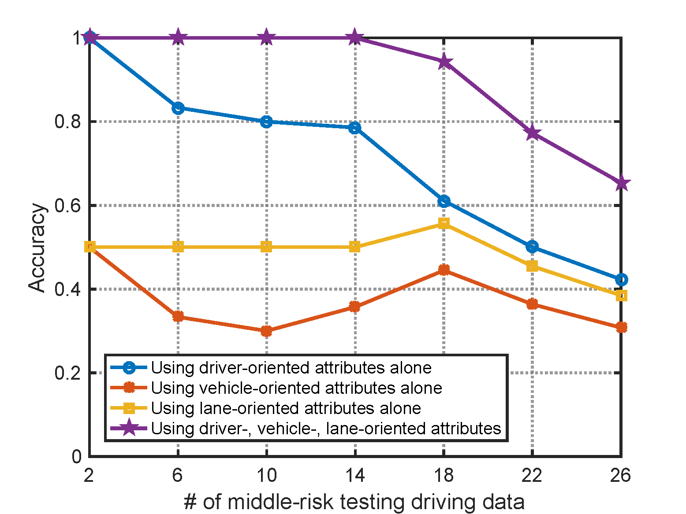

Usage-based-insurance is an emerging automobile insurance service in which the driver premium is set individually for each policyholder. A personalized automobile insurance mechanism presents challenges that differ from those presented by the general driver assistance applications that analyze driver behaviors. In this paper, a novel framework based on boosted multiplekernel learning is proposed to reflect the driving risk level of each driver for automobile usage-based-insurance. In the proposed framework, a set of kernels is specified to represent the inherent characteristics of vehicle-oriented, driver-oriented, and lane-oriented attributes. These multiple kernels are carefully integrated using the AdaBoost technique to realize particular collaborative features for driving risk assessment. Experimental results obtained using a lab-recorded driving data set under real-world conditions reveal that the proposed framework exhibits impressive accuracy and robustness in terms of different driving-risk levels.

J. Yin and B. Chen, "An Advanced Driver Risk Measurement System for Usage-Based Insurance on Big Driving Data," IEEE Transactions on Intelligent Vehicles, vol. 3, no. 4, pp. 585-594, Dec. 2018. [pdf][bib]